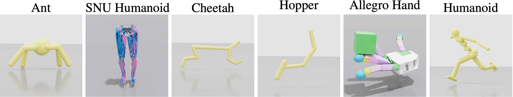
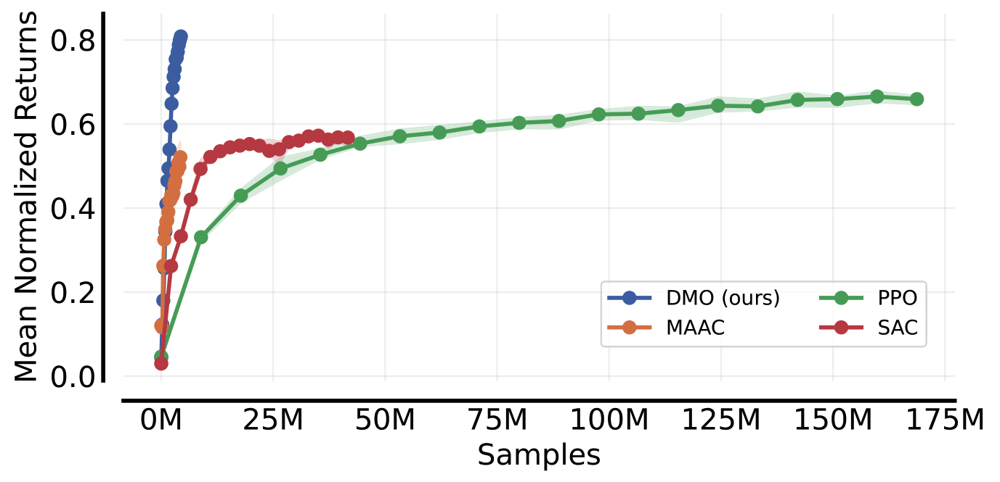
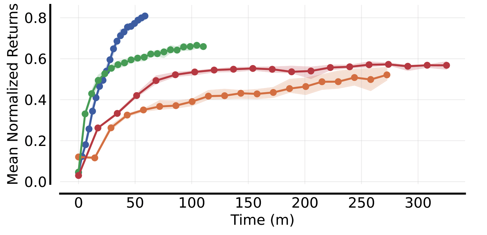

Environments: Ant, Hopper, Cheetah, Humanoid, SNUHumanoid, AllegroHand.

DMO reaches strong returns with under 4M samples, over 10× fewer than PPO in our study.

Wall-clock efficiency: decoupling accelerates training while maintaining accuracy.